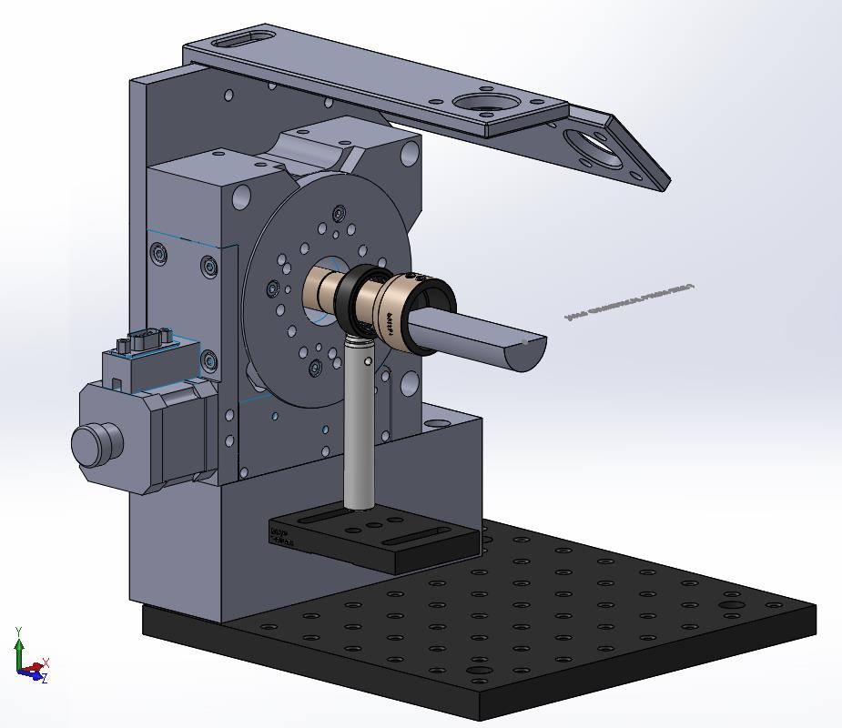

Optics and Biomedical engineering
Software development
Publications
Fluorescence dipole orientation measurement arrangement
Article link

3D CAD model of final assembly consisting of a half cylindrical prism, PMT holder and rotational arrangement. The substrate coated with fluorescent label is placed on the half cylindrical prism and the illumination (from laser diode mounted on one of the two top plates ) either at normal incidence or at 45 degree of incidence shines on the label. The fluorescent light emitted in all the directions will be measured with the PMT (mounted on the moving arm connected to central stepper motor axis). The intensity versus rotational angle profile will provide a picture of orientation of labels on the substrate or can be used to optimise preferred orientations.